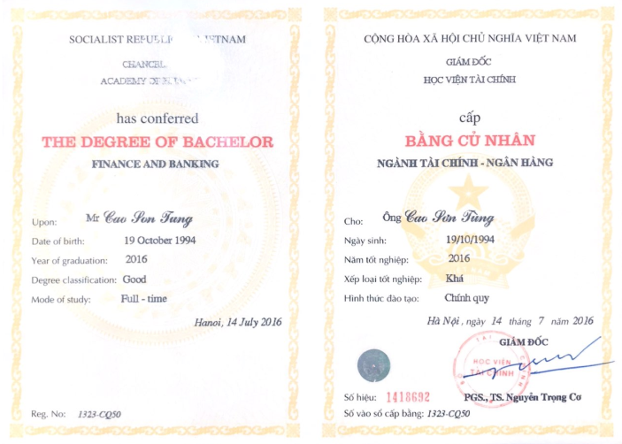
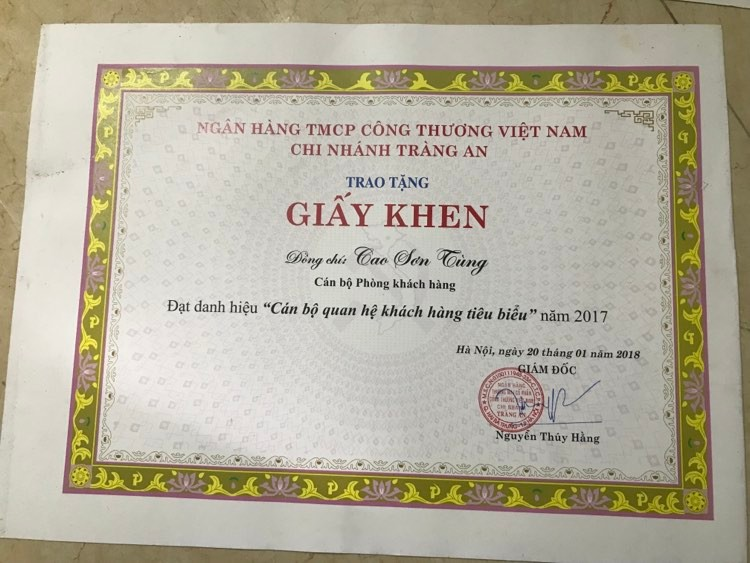

Tự học, rèn luyện và cống hiến sẽ là việc tôi làm hàng ngày cho đến ngày cuối cùng của cuộc đời. Tôi tin rằng năng lực của mình sẽ đem đến giá trị cho tổ chức và xã hội

Hơn 7 năm kinh nghiệm làm việc tại VietinBank (06/2016-hiện tại) và BIDV(3/2015-06/2016), am hiểu các nghiệp vụ tín dụng, bảo lãnh, thẩm định dự án, ngoại tệ, phi tín dụng(thanh toán, chi lương, thẻ, e-banking…) có kinh nghiệm quản lý lượng lớn khách hàng tổ chức/cá nhân,thẩm định tài chính doanh nghiệp, phân tích báo cáo tài chính, thẩm định bất động sản. Nắm bắt các văn bản chính sách pháp luật về tài chính ngân hàng và thẩm định giá, phân tích số liệu, xây dựng chiến lược kế hoạch kinh doanh và triển khai bán hàng tại chi nhánh, PGD.
Có kinh nghiệm thực tế trong việc thẩm định tài chính doanh nghiệp và bất động sản, quản lý vòng quay vốn lưu động và đầu tư tài sản cố định, các nghiệp vụ tài trợ thương mại như cấp bảo lãnh dự thầu, bảo lãnh thanh toán, tạm ứng, bảo lãnh bảo hành, bảo lãnh tiến độ….Các nghiệp vụ chuyển tiền T/T L/C, chiết khấu, bao thanh toán...
Có kiến thức về thị trường tài chính và các sản phẩm tài chính, phái sinh trong thị trường, hoạch định tài chính doanh nghiệp và cân đối nguồn vốn, tài sản và dòng tiền cho doanh nghiệp
Sử dụng thành thạo ngôn ngữ lập trình Python để làm sạch, khai thác và phân tích dữ liệu và áp dụng 4 model Machine Learning: K-means, linear regression, Gradient Descent, KNN trong việc dự đoán tương lai trong quá trình ra quyết định của doanh nghiệp
"Trả lời phỏng vấn của VTV1 về sản phẩm cho vay thấu chi dành cho cá nhân, doanh nghiệp theo thông tư 39 của Ngân Hàng Nhà Nước"
Cử nhân Tài Chính – Ngân Hàng Học Viện Tài Chính (Chính Quy Khóa 50/2012-2016)
Chứng chỉ nghiệp vụ Thẩm Định Giá số 32CC/2019-HTĐGVN Hội Thẩm Định giá Việt Nam
Bao gồm 6 môn học: Thẩm định giá bất động sản; Thẩm định giá máy, thiết bị; Thẩm định giá trị doanh nghiệp;Pháp luật áp dụng trong hoạt động định giá và thẩm định giá tài sản; Nguyên lý hình thành giá cả thị trường; Những nguyên lý căn bản về thẩm định giá.
Quá trình đào tạo 6 tháng và thi lấy chứng chỉ giụp nâng cao nhận thức về thẩm định giá các tài sản trong nền kinh tế, để từ đó mỗi thẩm định viên có thể áp dụng các phương pháp thẩm định giá vào công việc hạn chế rủi ro và có 1 quy chuẩn thẩm định đối với mỗi loại tài sản
CFA level 1
Chứng chỉ CFA (the Chartered Financial Analyst) được cấp bởi Viện CFA Hoa Kỳ – thành lập năm 1947, hiện có hơn 167.000 hội viên tại 165 quốc gia trên toàn cầu. CFA là một chứng chỉ nghề nghiệp được xem như một tiêu chuẩn vàng đánh giá năng lực, tính chuyên nghiệp trong đầu tư tài chính được chấp nhận trên toàn thế giới
12 chuyên đề quản trị kinh doanh – Trường Doanh nhân PR - Tiên sĩ Lê Thẩm Dương (2020-2021)
Khóa đào tạo Quản trị kinh doanh chuyên sâu kéo dài 12 tháng do tiến sĩ Lê Thẩm Dương trực tiếp giảng dậy là một trong những khóa học đem lại cho tôi cái nhìn tổng quát và nhận thức rõ ràng về "nghề Quản trị". Những khái niệm như tầm nhìn, chiến lược, văn hóa doanh nghiệp, bối cảnh chiến lược của doanh nghiệp hay những nguyên lỹ bất biến trong quản trị được thầy giải thích 1 cách chi tiết, dễ hiểu và được cập nhật gắn với bối cảnh hiện tại:
1 Mô hình kinh doanh và các nguyên lý quản trị bất biến
2 Chiến lược kinh doanh - xây dựng và vận hành
3 Lãnh đạo - các kỹ năng lãnh đạo
4 Xây dựng doanh nghiệp thực thi
5 Chiến lược nhân sự
6 Tài chính dành cho lãnh đạo
7 Marketing hiện đại - chiến lược và hành động
8 Bán hàng chuyên nghiệp
9 Xây dựng văn hóa doanh nghiệp
10 Xây dựng phát triển thương hiệu doanh nghiệp
11 Quản trị rủi ro trong kinh doanh
12 Quản trị sự thay đổi (cả tiến - tái cấu trúc - tái lập)
Top 30 nhân viên trong 50 cán bộ tiêu biểu toàn hệ thông VietinBank
Bằng khen 2 năm liên tiếp đạt thành tích kinh doanh xuất sắc do CTHĐQT trao tặng
Năm 2019
Năm 2018
Vào Đảng, bằng khen của CTHĐQT về "Học tập và làm theo tư tưởng, đạo đức, phong cách Hồ Chí Minh" năm 2018
Cán bộ tiêu biểu chi nhánh 2017
Á quân, quán quân tăng trưởng kinh doanh các tháng, quý
Đọc sách, tự nghiên cứu tìm tòi
Võ thuật (karate-do), leo núi - luôn luôn giữ gìn và chăm sóc sức khỏe chính là thói quen tốt giúp duy trì trạng thái tốt nhất cho côn việc và cuộc sống
Tình nguyện (22 lần hiến máu và 2 lần liên kết với Viện Huyết Học tổ chức hiến máu tại VietinBank), tích cực tham gia các hoạt động của Đảng, Đoàn tại tổ chức

Địa chỉ: Chung cư Phương Đông Green Park – Hoàng Liệt, Hoàng Mai, Hà Nội
Phone number: (+84)945-452-333
Mail: tung.cao.qlcv1910@gmail.com